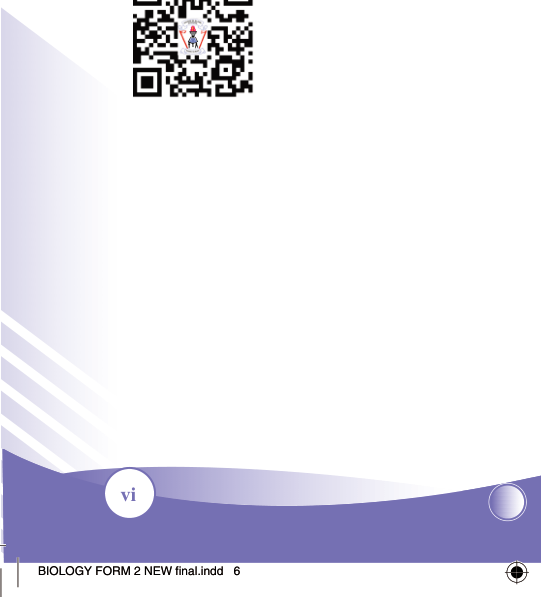

vi
Student’s Book - Form Two

Biology for Secondary Schools
Preface
This textbook, Biology for Secondary Schools has been written specifically for Form Two students in the United Republic of Tanzania. The book has been prepared in accordance with the 2023 Biology Syllabus for Ordinary Secondary
Education, Form I-IV, issued by the Ministry of Education, Science and
Technology (MoEST). It is a revised edition of Biology for Secondary Schools
Student’s Book Form Two that was published in 2021 in accordance with the
2005 Biology for Secondary Education, Form I-IV Syllabus issued by the then
Ministry of Education and Vocational Training (MoEVT).
The book consists of six chapters, namely Nutrition in animals, Digestive system,
Transport of materials in living things, Transport of materials in flowering plants,
Transport of materials in mammals, and Gas exchange and respiration. Each chapter contains tasks, illustrations, activities, exercises and revision exercises.
Students are encouraged to do all the tasks, activities and answer all questions to enhance their understanding and promote the acquisition of intended skills, knowledge and attitude.
Additional learning resources are available in TIE’s e-Library at http://ol.tie.go.tz
Tanzania Institute of Education

08/04/2026 10:18:09